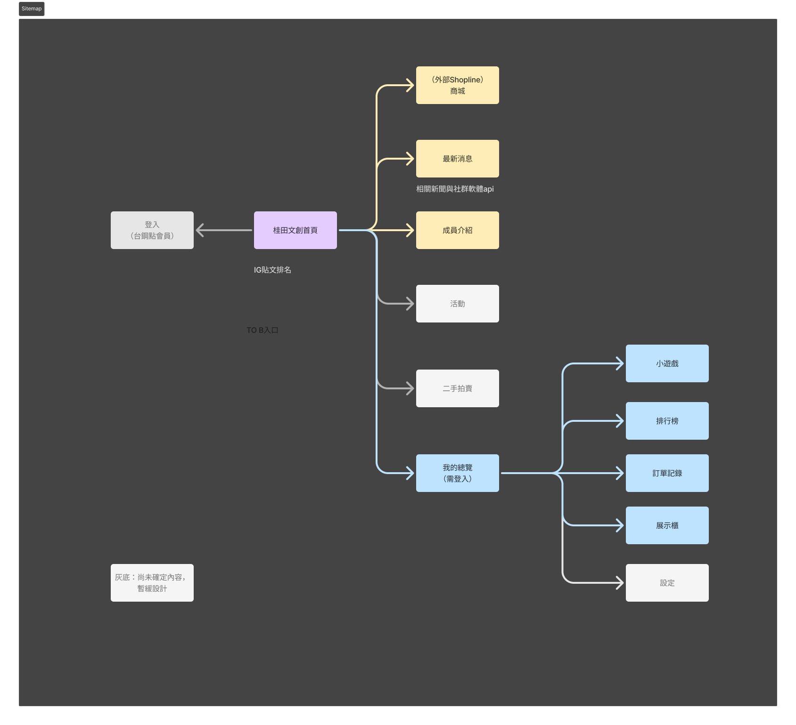

介面流程展示
註冊流程（5 步驟 Popup）
1
首頁入口
點擊「馬上開始」
2
手機驗證
輸入手機號碼
3
OTP 驗證
輸入簡訊驗證碼
4
設定密碼
建立帳號密碼
5
個人資訊
填寫基本資料
6
註冊成功
歡迎加入會員
1 / 6
忘記密碼流程
1
忘記密碼
輸入手機或信箱
2
簡訊驗證
查看簡訊 OTP
3
信箱驗證
查看信箱連結
4
重設密碼
設定新密碼
5
重設完成
可立即登入
1 / 5
Sitemap 資訊架構

點數系統流程圖 & 資料架構